Single Image Reconstruction with Explicitly Parameterized Latent Spaces
By Hans Gaensbauer • April 21, 2025
Introduction
Single image reconstruction is generally under-constrained, since the 2D projection implicit in the creation of the image destroys information about depth. However, for some applications, prior information about the 3D geometry drastically reduces the number of parameters required to completely describe the scene. For example, in industrial settings when computer vision is to be used to perform measurements (for verification) or localization (for pick and place) on parts that have a well understood but unknown shape. In these cases, general purpose latent representations are too general to elegantly capture the prior geometric information,but classical template matching may require too much manual fine-tuning or insufficient accuracy for the application[1].
I propose to use OpenSCAD scripts as 3D representations for parametric models to explicitly define a parameterization of the 3D scene. OpenSCAD is a well-known text-based 3D modelling program that is widely used to create “customizable” models where a few key variables are explicitly defined. By replacing the OpenSCAD renderer with a differential renderer, I can recover these model parameters from an image by performing gradient descent on the model parameters and pose through the differentiable renderer similar to the reconstruction training approach described in [2], [3]. A nice example of this approach to recover the pose of a completely defined mesh is given in [4].
There is a significant body of work that uses deformable 3D models (or large databases of 3D models) to fit meshes and extract the pose of target objects from a single photo[5], [6], [7], [8], [9], [10], [11]. The proposed approach has orders of magnitude fewer optimization parameters because I am optimizing a small number of user-specified parameters rather than the position of every point on the mesh. The handful of papers that do use explicitly defined low-dimensional 3D parameterizations are application specific and therefore use training/inference techniques that do not attempt to completely describe the 3D object [12],[13]. On the other end of the spectrum, the proposed project has a lot in common with classical approaches to object matching using user-specified models, with the important difference that these template-matching algorithms do not leverage a differentiable renderer for gradient-descent on the image data [14], [15].
I will aim to compare reconstruction using explicitly parameterized models for surface mounted integrated circuits, fasteners, and spur gears to conventional 3D reconstruction techniques using more general latent representations to answer the following questions:
- For a given accuracy, how does the size and speed of explicitly parameterized reconstruction compare to traditional methods?
- Does explicitly parameterized reconstruction generalize to real-world input images better than conventional mesh fitting? Specifically, how does the accuracy on a test set of real images compare?
- Are results consistent across object type? What types of parameterizations are allowable? (it seems likely that affine transformations will work better than parameterizations that change, for example, the number or arrangement of certain features).
Finally, to assess whether this approach is simpler to set up than template matching with a parameterized template, I will also implement a classical template matching pipeline for these objects and discuss the amount of fine-tuning required to use the two approaches for different classes of objects.
Conventional Object Tracking with OpenCV
Mesh Fitting with Differential Rendering
A different approach that can leverage the tools we have for machine learning is to use gradient descent to optimize a mesh by rendering views of that mesh that correspond to our ground-truth images with a differentiable renderer. We can use the L2 loss between the rendered image of our mesh and the ground truth image, and back-propagate through the renderer in order to update the positions of the vertices. This approach has been described extensively and is relatively straightforward to implement using tools like Pytorch3D. Typically, the mesh is stored as a Pytorch tensor, and the 3D position of every vertex of the mesh is optimized.
While there is nothing preventing us from parameterizing only a subset of the mesh vertices, or from adding constraints to the changes that we allow the optimizer to make, in practice this quickly becomes inconvenient because Pytorch is not a 3D modelling program. A better workflow is to use a dedicated mesh modelling program like Blender to create a parameterized model which is then brought into Pytorch and optimized. Blender is a particularly attractive choice because it is very tightly integrated with Python anyway, and the Blender Python API makes it easy to access the model and the user-defined parameters. Blender supports a variety of parametric transformations that give us an intuitive way of defining degres of freedom for our model.
Unfortunately, because Blender is not implemented in PyTorch, none of the mesh updates can be differentiated by Pytorch. This is a deeper problem inherent in any attempt to couple an external program with deep learning tools, since file IO in general breaks the gradient computation. Fortunately, besaf cause Blender is so well integrated with Python, it is possible to extract each of the transform matrices associated with the applied mesh transformations. This makes it possible to keep the mesh in pytorch while applying transformations that are defined in Blender, and the final mesh in Blender can be updated after the optimization process.
Parameterizations in Blender
Blender is a free and open source program for 3D modelling, sculpting, VFX,
simulation, video editing, animation, and a whole host of other features. It is
extremely well supported, meaning it is very straightforward to learn how to use
it to create custom parameterized models using online tutorials.
In Blender, meshes are edited in "Edit Mode", which gives fine control over
individual mesh vertices. Afterward, the finished mesh can be further transformed
and positioned in "Object Mode", which is where the render and scene are set up.
Blender is an extremely feature-rich modelling program and thus there are very
many modifiers and transformations that can be applied to a model. For this
project, I will restrict myself to affine transformations applied in Object Mode
and Shape Keys applied in Edit Mode, which together are sufficient to capture a
decent range of possible mesh degrees of freedom.
Object Transformations and Drivers
After the vertex positions are computed in Blender, it is possible to apply a
number of additional transformations to the entire mesh in Object Mode. The entire
mesh is transformed using a 4x4 matrix in homogeneous coordinates to locate the
object within the scene.
In order to parameterize these transformations, Blender includes "drivers" which
can be used to drive transformations. For general use, drivers allow certain
object properties to be driven by other parameters in the model, but for our use,
drivers allow us to flag parts of the transformation matrix that we want to
optimize. For example, we can specify that we only want to vary the X/Y position
(and not Z) of the object on some known surface, or constrain the aspect ratio
while allowing the absolute size to be optimized.
While there are a miscellany of ways to communicate a specific parameterization to
the optimizer in Pytorch, the approach that best aligns with convention for
drivers in normal Blender use is to define an empty "control object" that has
custom parameters for each of the variables we wish to optimize. Then, each of the
drivers that we define for the objects we want to optimize refer to the properties
of the control object. This is especially convenient because we need to compute
the world transformation matrix in Pytorch in order to use it in the optimization. We can extract each of the control object parameters and assign them to gradient-enabled tensors like this:
control = bpy.data.objects["Control"]
custom_props = {}
if control is not None:
for key, value in control.items():
if not key.startswith("_"):
custom_props[key] = value
#Assign each of the custom properties to custom variables
def initialize_params(custom_props):
params_assign_string = "global opt_props\n"
params_assign_string += "opt_props = []\n"
for prop in custom_props:
params_assign_string += f"global {prop}\n"
params_assign_string += f"{prop} = torch.tensor([{custom_props[prop]}], device=device, requires_grad=True)\n"
params_assign_string += f"opt_props.append({prop})\n"
print(params_assign_string)
exec(params_assign_string)
initialize_params(custom_props)
As an example, for a Blender model of a parameterized bolt, the snippet above creates (and executes) the following code:
global opt_props
opt_props = []
global head_thickness
head_thickness = torch.tensor([0.5], device=device, requires_grad=True)
opt_props.append(head_thickness)
global body_diameter
body_diameter = torch.tensor([0.78], device=device, requires_grad=True)
opt_props.append(body_diameter)
global l_x
l_x = torch.tensor([1.2], device=device, requires_grad=True)
opt_props.append(l_x)
global l_y
l_y = torch.tensor([0.0], device=device, requires_grad=True)
opt_props.append(l_y)
global head_diameter
head_diameter = torch.tensor([3.0], device=device, requires_grad=True)
opt_props.append(head_diameter)
global body_length
body_length = torch.tensor([2.3], device=device, requires_grad=True)
opt_props.append(body_length)
The initial values of each of the properties are pulled from the Blender file.
Shape Keys
Shape Keys are a Blender feature for creating arbitrary parametric mesh
distortions. The user defines a default mesh configuration and then uses Edit Mode
to distort the mesh to a desired "end" position. The shape key defines a linear
interpolation between the start and end vertex positions for the selected
vertices, weighted by the "key" parameter. For example, this can be used to make a
character smile or to scale and move certain parts of the mesh. It is possible to
define multiple shape keys for the same vertices, in which case the final mesh is
the weighted sum of each of the transformations.
To apply a shape key outside of Blender, we extract the "basis" or starting vertex
positions and the "key" or ending vertex positions, and then compute the new mesh
as mesh = basis + key*(key-basis):
# Apply a shape key externally
basis = cube.shape_keys.key_blocks["Basis"].data
basis_verts = torch.tensor(np.array([v.co[:] for v in basis],
dtype=np.float32)[np.newaxis,:,:], requires_grad=True, device=device)
key1 = cube.shape_keys.key_blocks["Wider Top"].data
key1_verts = torch.tensor(np.array([v.co[:] for v in key1],
dtype=np.float32)[np.newaxis,:,:], requires_grad=True, device=device)
#Compute the distorted mesh
keyval = torch.tensor([0.8], requires_grad=True, device=device)
verts = basis_verts + keyval * (key1_verts - basis_verts)
mesh = Meshes(verts=verts, faces=faces_tensor, textures=textures)
Here, keyval is the gradient-enabled tensor used for optimization.
Parameterized Mesh Fitting
In order to optimize the mesh using Pytorch, it is not enough to extract the parameters and compute the tranformations once. Rather, we need to extract the entire dependency graph and automatically re-implement it in Pytorch so that it is fully differentiable.Building a PyTorch Pipeline from Blender Parameterizations
Blender gives us access to the expressions used to evaluate each driver, and it is relatively straightforward to compute the 4x4 homogeneous transformation matrix from the updated driver values in Pytorch. At a high level, our approach looks like this:- Extract all of the custom properties from the empty control object
- Extract the list of drivers from the objects in the scene
- Automatically build a function that computes the drivers from the control object properties in Pytoch
- Use this function to compute an updated transformation matrix during training
In practice, this is complicated by the fact that all of the expressions for the different dependencies are strings, which need to be parsed at runtime. To do this, we build an update_matrix() function from the drivers/parameters at runtime:
obj = bpy.data.objects["Target"]
drivers = {}
#defaults
drivers["location"] = [{"exp":"0","vars":{}},
{"exp":"0","vars":{}},
{"exp":"0","vars":{}}]
drivers["rotation_euler"] = [{"exp":"0","vars":{}},
{"exp":"0","vars":{}},
{"exp":"0","vars":{}}]
drivers["scale"] = [{"exp":"1","vars":{}},
{"exp":"1","vars":{}},
{"exp":"1","vars":{}}]
if obj.animation_data and obj.animation_data.drivers:
for driver in obj.animation_data.drivers:
drivers[driver.data_path][driver.array_index]["exp"] = driver.driver.expression
variables = {}
for var in driver.driver.variables:
variables[var.name] = var.targets[0].data_path
drivers[driver.data_path][driver.array_index]["vars"] = variables
else:
print("No drivers on this object.")
def get_transform_update_string(drivers):
vstr = "def update_transform():\n"
for driver in drivers:
vstr += f"\t{driver} = torch.zeros(3, device=device)\n"
for axis in range(3):
vars = drivers[driver][axis]["vars"]
for var in vars:
vstr += f"\t{var} = {vars[var][2:-2]}\n"
vstr
exp = drivers[driver][axis]["exp"]
vstr += f"\t{driver}[{axis}] = {exp}\n"
vstr += "\treturn build_transform(location, rotation_euler, scale)\n"
return vstr
As an example, for a cube with rotation and the x axis scale that are both driven by a single parameter, this code produces the following output:
def update_transform():
location = torch.zeros(3, device=device)
location[0] = 0
location[1] = 0
location[2] = 0
rotation_euler = torch.zeros(3, device=device)
var = scale1
rotation_euler[0] = 0.3*var
rotation_euler[1] = 0
rotation_euler[2] = 0
scale = torch.zeros(3, device=device)
var = scale1
scale[0] = 2*var
scale[1] = 1
scale[2] = 1
return build_transform(location, rotation_euler, scale)
In this case, scale1 has already been defined as a global, gradient-enabled tensor by the call initialize_params. Finally, we need to implement build_transform():
def build_transform(location, rotation, scale):
cx, cy, cz = torch.cos(rotation)
sxr, syr, szr = torch.sin(rotation)
ones = torch.ones((), device=device)
zeros = torch.zeros((), device=device)
Rx = torch.stack([
torch.stack([ones, zeros, zeros], dim=-1),
torch.stack([zeros, cx, -sxr], dim=-1),
torch.stack([zeros, sxr, cx], dim=-1)
], dim=0)
Ry = torch.stack([
torch.stack([cy, zeros, syr], dim=-1),
torch.stack([zeros, ones, zeros], dim=-1),
torch.stack([-syr, zeros, cy], dim=-1)
], dim=0)
Rz = torch.stack([
torch.stack([cz, -szr, zeros], dim=-1),
torch.stack([szr, cz, zeros], dim=-1),
torch.stack([zeros, zeros, ones], dim=-1)
], dim=0)
R = Rz @ Ry @ Rx
S = torch.diag(torch.stack([scale[0], scale[1], scale[2]]))
RS = R @ S
loc = location.view(3, 1)
upper = torch.cat([RS, loc], dim=1)
return upper.to(dtype=torch.float32)
This returns a 3x4 tensor that transforms homogeneous vertex positions into non-homogeneous transformed vertex positions.
Training
With all this in place, training is straightforward. In each iteration, we use update_transform() to obtain an updated transform matrix from the optimization parameters, transform the mesh, render, and compute a loss. Then we backpropagate to the optimization parameters.
optimizer = torch.optim.Adam(opt_props, lr=0.02)
num_epochs = 100
epochs_per_save = 5
gif_images = np.zeros((num_epochs//epochs_per_save, image_size, image_size, 3), dtype=np.uint8)
with tqdm(range(num_epochs)) as titer:
for i in titer:
optimizer.zero_grad()
matrix_world = update_transform()
ones = torch.ones(verts_tensor.shape[0], verts_tensor.shape[1], 1, device=verts_tensor.device)
nverts = einsum(torch.cat([verts_tensor, ones], dim=-1), matrix_world,'b i v, j v-> b i j')
mesh = Meshes(verts=nverts, faces=faces_tensor, textures=textures)
cimage = renderer(mesh)
#Save the image into a GIF to show the training proces
if(not i % epochs_per_save):
gif_images[i//epochs_per_save] = (cimage[...,:3]*255).byte().detach().cpu().numpy()
loss = torch.sum((cimage - target_image)**2)
loss.backward()
optimizer.step()
titer.set_postfix(loss=loss.item(), scale1=opt_props[0].item())
For the tiny example with a cube parameterized such that the length and x axis rotation are both driven by a single parameter, training for 100 iterations looks like this:
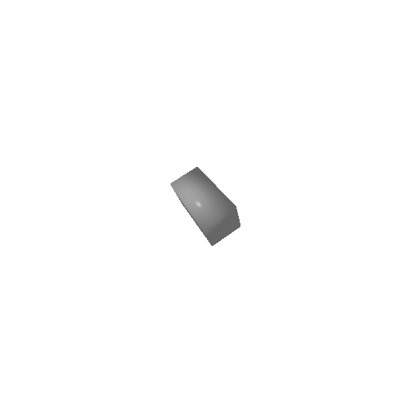 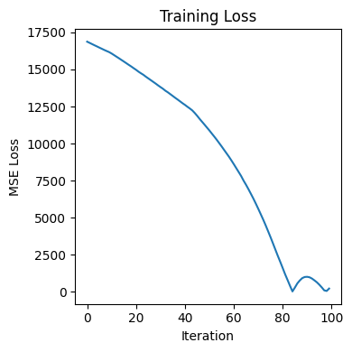Optimizing Shape Keys
Optimizing shape keys works exactly the same way. The shape keys are applied before the object transformation matrix is applied, and the key parameter is included with the other control parameters in the optimizer. A very simple example where the top face of a cube is distorted and then optimized back to the perfect cube for 100 iterations looks like this:
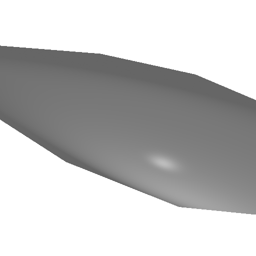 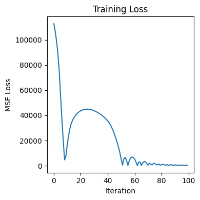Composite Meshes and Extracting 2D Location
A single transform matrix is not terribly useful on its own, since a single affine transformation is too simple to parameterize an interesting range of possible shapes. However, the driver+transform matrix approach is readily extended to more complicated blender files featuring composite meshes. Each mesh in the scene can have its own parameterized transformations and shape keys, and the drivers for these transformations can depend on properties of other meshes.
For example, the model of the bolt shown below consists of two cylinders: one for the head and one for the body of the bolt. The height and diameter of each cylinder are parameterized, and the body of the bolt is translated so that it stays attached to the head as the head height changes. Furthermore, the entire bolt has a parameterized XY location, which is intended to capture an unknown location on a known ground plane. The photo to the right shows the parameters defined in Blender.
The function get_transform_update_string() must be updated to produce a function that returns a list of transform matrices, one for each mesh in the target collection (Blender's way of denoting a composite mesh)
def get_transform_update_string(drivers):
vstr = "def update_transform():\n"
vstr += "\ttransform_matrices = []\n\n"
for drivers in drivers_list:
for driver in drivers:
vstr += f"\t{driver} = torch.zeros(3, device=device)\n"
for axis in range(3):
vars = drivers[driver][axis]["vars"]
for var in vars:
vstr += f"\t{var} = {vars[var][2:-2]}\n"
vstr
exp = drivers[driver][axis]["exp"]
vstr += f"\t{driver}[{axis}] = {exp}\n"
vstr += "\ttransform_matrices.append(build_transform(location, rotation_euler, scale))\n\n"
vstr += "\treturn transform_matrices\n"
return vstrThe training loop now includes an inner loop that transforms each mesh in the scene.
with tqdm(range(num_epochs)) as titer:
for i in titer:
optimizer.zero_grad()
transform_matrices = update_transform()
meshes = []
# Apply each of the transforms
for j in range(len(transform_matrices)):
matrix_world = transform_matrices[j]
ones = torch.ones(verts_tensor_list[j].shape[0], verts_tensor_list[j].shape[1], 1, device=device)
nverts = einsum(torch.cat([verts_tensor_list[j], ones], dim=-1), matrix_world,'b i v, j v-> b i j')
meshes.append(Meshes(verts=nverts, faces=faces_tensor_list[j], textures=textures_list[j]))
scene = join_meshes_as_scene(meshes, True)
cimage = renderer(scene, cameras=cameras, lights=lights)[0,...,3]
#Save the image into a GIF to show the training proces
if(not i % epochs_per_save):
simage = visrenderer(scene)
gif_images[i//epochs_per_save] = (simage[...,:3]*255).byte().detach().cpu().numpy()
loss = torch.sum((cimage - target_image)**2)
loss.backward()
optimizer.step()
titer.set_postfix(loss=loss.item(), length=opt_props[-1].item())
This code can accept any number of objects in the composite mesh. Training for 300 epochs gives the following results:
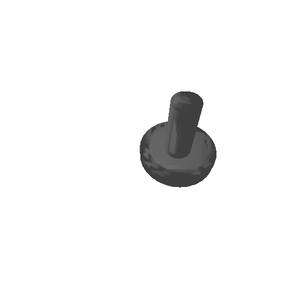 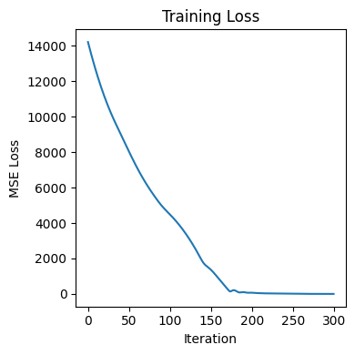One significant challenge with fitting the XY location occurs when there is insufficient overlap between the starting mesh and the target image. In these cases, MSE loss does not produce enough of a gradient that points towards the correct location since the location does not significantly affect the loss until the mesh and target object are close enough that the "fuzziness" from the differentiable renderer has a significant amount of overlap. In these cases, the model will sometimes "cheat" by attempting to shrink the target mesh to reduce the error in the pixels that the target mesh is occupyting:
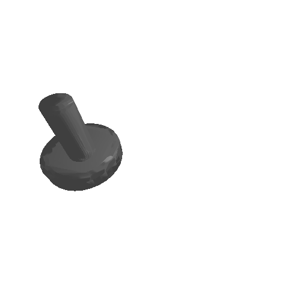 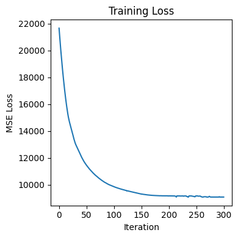Notice that the loss "converges" to a large nonzero value. One possible fix is to blur the images so there is always some overlap. Anecdotally, doing this through the differential renderer produced strange side effects, so instead I implemented it using kornia.gaussian_blur2d with a standard devation of 10 and a kernel size of (101,101). The new target image looks like this:
And the results for the same mesh fitting problem and hyperparameters are much better:
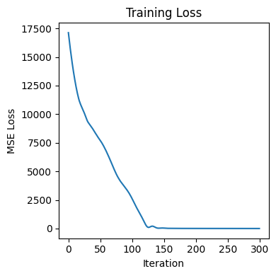Of course, this is not without tradeoffs. The final fit suffers from the loss of detail from the blur: this results in the bolt head being slightly too thin even though the loss converges. Additionally, while the blur causes training to converge in slightly fewer iterations, it triples (3m21s vs 1m04s) the amount of time it takes to train because the blur kernel must be very large to get some overlap when the objects start far away. It may be possible to dynamically adjust the level of blur during training to get the best of both worlds but this is outside the scope of this project.
Fitting Photos
For the proposed technique to be useful, it must be able to handle real photos as target images, rather than "perfect" renderings created in Pytorch3D. The optimizer uses silhouette loss, so the input images must be preprocessed by reducing them to a single channel. For this demonstration, I have further reduced the image to a 1-bit mask to remove the effects of lighting/shadows.
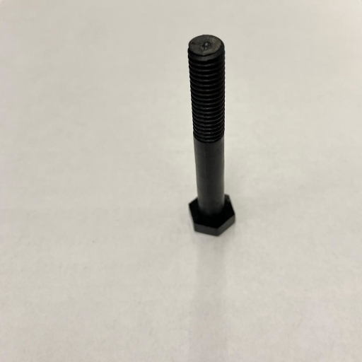
Since this photo was taken at a different angle than the angle of the camera in the renderer, it is not possible to get a perfect match. However, the training does still converge:
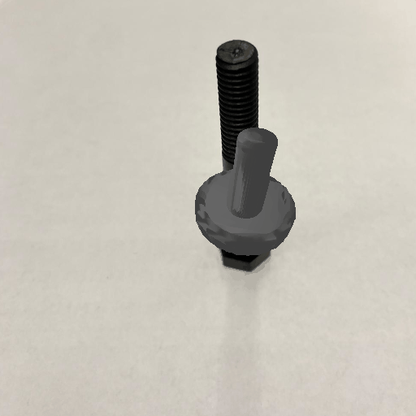 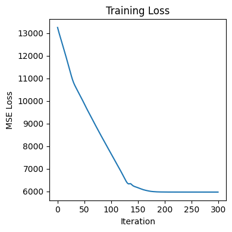For many cases (like pick and place machines), the camera parameters are known ahead of time, and this won't be a problem. For cases like this photo where the camera position is not known, we can also optimize the camera angle (here we are training for only 100 iterations):
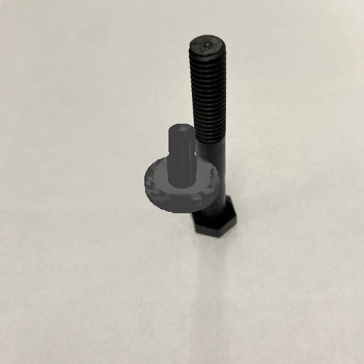 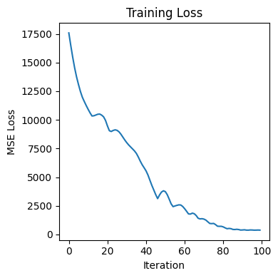The initial dimensions are the same as in the experiment above - it's hard to see the initial state since it changes very quickly at the start of training.
Comparison to Existing Techniques
Conclusion
- Not ideal using silhouette
- Very slow
References
- D. Shin, C. C. Fowlkes, and D. Hoiem, “Pixels, Voxels, and Views: A Study of Shape Representations for Single View 3D Object Shape Prediction,” in 2018 IEEE/CVF Conference on Computer Vision and Pattern Recognition, Salt Lake City, UT: IEEE, Jun. 2018, pp. 3061–3069. doi: 10.1109/CVPR.2018.00323.
- S. Popov, P. Bauszat, and V. Ferrari, “CoReNet: Coherent 3D scene reconstruction from a single RGB image,” Aug. 05, 2020, arXiv: arXiv:2004.12989. doi: 10.48550/arXiv.2004.12989.
- P. Henderson and V. Ferrari, “Learning single-image 3D reconstruction by generative modelling of shape, pose and shading,” Aug. 26, 2019, arXiv: arXiv:1901.06447. doi: 10.48550/arXiv.1901.06447.
- A. Chan, “Adventures with Differentiable Mesh Rendering,” Distill. Accessed: Apr. 08, 2025. [Online]. Available: http://andrewkchan.dev/
- N. Kholgade, T. Simon, A. Efros, and Y. Sheikh, “3D object manipulation in a single photograph using stock 3D models,” ACM Trans. Graph., vol. 33, no. 4, pp. 1–12, Jul. 2014. doi: 10.1145/2601097.2601209.
- J. J. Lim, A. Khosla, and A. Torralba, “FPM: Fine Pose Parts-Based Model with 3D CAD Models,” in Computer Vision – ECCV 2014, vol. 8694, D. Fleet, T. Pajdla, B. Schiele, and T. Tuytelaars, Eds., Lecture Notes in Computer Science, Cham: Springer, 2014, pp. 478–493. doi: 10.1007/978-3-319-10599-4_31.
- K. Rematas, T. Ritschel, M. Fritz, and T. Tuytelaars, “Image-Based Synthesis and Re-synthesis of Viewpoints Guided by 3D Models,” in 2014 IEEE Conference on Computer Vision and Pattern Recognition, Columbus, OH, USA: IEEE, Jun. 2014, pp. 3898–3905. doi: 10.1109/CVPR.2014.498.
- M. Aubry, D. Maturana, A. A. Efros, B. C. Russell, and J. Sivic, “Seeing 3D Chairs: Exemplar Part-Based 2D-3D Alignment Using a Large Dataset of CAD Models,” in 2014 IEEE Conference on Computer Vision and Pattern Recognition, Jun. 2014, pp. 3762–3769. doi: 10.1109/CVPR.2014.487.
- C. B. Choy, M. Stark, S. Corbett-Davies, and S. Savarese, “Enriching object detection with 2D-3D registration and continuous viewpoint estimation,” in 2015 IEEE Conference on Computer Vision and Pattern Recognition (CVPR), Boston, MA, USA: IEEE, Jun. 2015, pp. 2512–2520. doi: 10.1109/CVPR.2015.7298866.
- J. Rock, T. Gupta, J. Thorsen, J. Gwak, D. Shin, and D. Hoiem, “Completing 3D object shape from one depth image,” in 2015 IEEE Conference on Computer Vision and Pattern Recognition (CVPR), Boston, MA, USA: IEEE, Jun. 2015, pp. 2484–2493. doi: 10.1109/CVPR.2015.7298863.
- M. Yavartanoo, J. Chung, R. Neshatavar, and K. M. Lee, “3DIAS: 3D Shape Reconstruction with Implicit Algebraic Surfaces,” Aug. 19, 2021, arXiv: arXiv:2108.08653. doi: 10.48550/arXiv.2108.08653.
- K. Genova, F. Cole, A. Maschinot, A. Sarna, D. Vlasic, and W. T. Freeman, “Unsupervised Training for 3D Morphable Model Regression,” in 2018 IEEE/CVF Conference on Computer Vision and Pattern Recognition, Salt Lake City, UT, USA: IEEE, Jun. 2018, pp. 8377–8386. doi: 10.1109/CVPR.2018.00874.
- M. Z. Zia, M. Stark, B. Schiele, and K. Schindler, “Detailed 3D Representations for Object Recognition and Modeling,” IEEE Trans. Pattern Anal. Mach. Intell., vol. 35, no. 11, pp. 2608–2623, Nov. 2013. doi: 10.1109/TPAMI.2013.87.
- D. Roller, K. Daniilidis, and H. H. Nagel, “Model-based object tracking in monocular image sequences of road traffic scenes,” Int. J. Comput. Vis., vol. 10, no. 3, pp. 257–281, Jun. 1993. doi: 10.1007/BF01539538.
- L. G. Roberts, “Machine perception of three-dimensional solids,” Thesis, Massachusetts Institute of Technology, 1963. Accessed: Apr. 08, 2025. [Online]. Available: https://dspace.mit.edu/handle/1721.1/11589